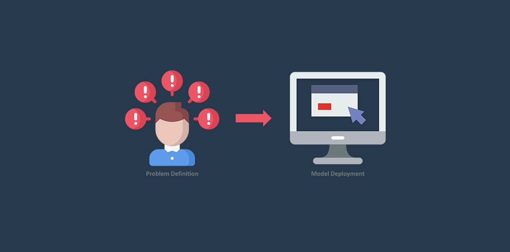

In this project i build movie recommendation engine which will
recommend movie to the user based on their viewing history, ratings, and other factors. The project
collects data on movies, users, and their interactions, processes it to extract
meaningful insights, and trains a recommendation model to make personalized movie.


In this project i used Deep Learning model that generates anime style face using generative adversarial networks (GANs).
it is trained on a large dataset of anime faces and can generate new faces with various attributes, such as gender, age, and emotions.

In this project i build Speech emotion recognition using LSTM that involves using deep learning techniques to train a neural network to recognize and transcribe spoken words. Specifically,
Long Short-Term Memory (LSTM) is a type of recurrent neural network that is well-suited for sequence processing tasks such as speech recognition. .
A machine learning project for classifying news articles as fake or real based on the content of the articles. The project uses a dataset of news articles and their corresponding labels to train a model. The model then makes predictions on new, unseen news articles and classifies them as fake or real.

Multiple Disease Detection Project uses machine learning algorithms to analyze medical imaging data and diagnose multiple diseases simultaneously. The goal of the project is to improve the accuracy and efficiency of disease detection by combining multiple algorithms and sources of information..

The Laptop Price Prediction project is a machine learning-based application that aims to predict the price of a laptop based on various features such as brand, processor, RAM, storage, graphics card, and other specifications.
The application uses a dataset of laptop prices and specifications to train a machine learning model that can predict the price of a laptop based on its features. The main objective of this project is to provide users with an estimate of how much a laptop should cost based on its specifications, helping them make informed decisions when purchasing a laptop.
Rainfall Prediction project is a machine learning-based application that aims to predict the amount of rainfall in a specific area based on various environmental and meteorological factors such as temperature, humidity, wind speed, air pressure, and others. The application uses historical data on weather conditions and rainfall to train a machine learning model that can predict the amount of rainfall in a given location for a specific period of time.